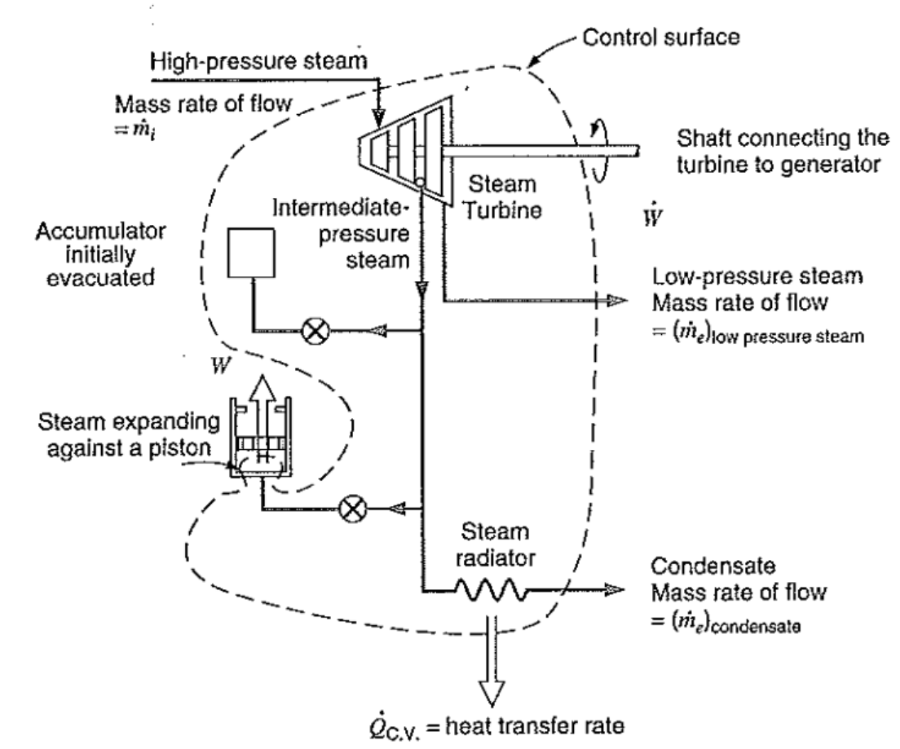
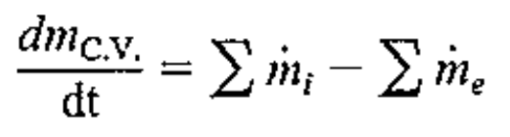
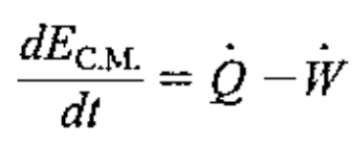
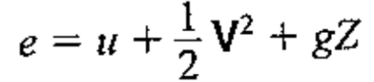
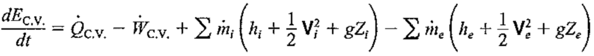
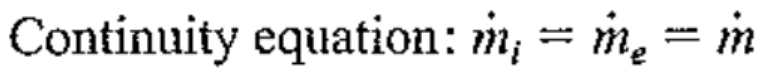
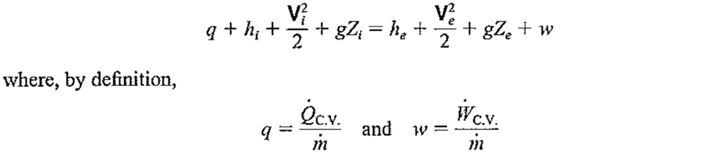
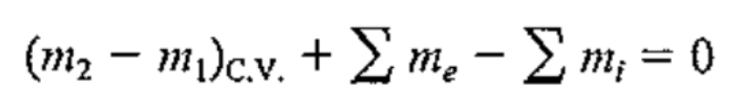
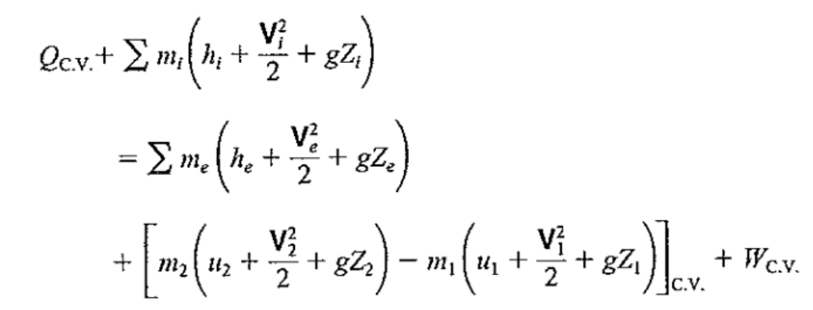

---
{
"layout": "note",
"title": "[Thermodynamics] Ch 4. Energy Analysis for a C.V",
"journal": true,
"section": "Study",
"topic": "Thermodynamics",
"excerpt": "방금까지 배운 열역학 개념들을 이제 써먹어 보자. 위 figure처럼, 실제 우리가 system을 define하고 들어오고 나가는 에너지(열,일)로 인해 property가 어떻게 바뀐는지 계산하기 위함이다. 가장 먼저 Define 해",
"classes": "wide",
"permalink": "/blog/mechanical-engineering/thermodynamics/thermodynamics-ch-4-energy-analysis-for-a-cv/",
"study_area": "Mechanical",
"date": "2024-04-22",
"source_url": "https://jeffdissel.tistory.com/68",
"header": {
"teaser": "/blog/mechanical-engineering/thermodynamics/thermodynamics-ch-4-energy-analysis-for-a-cv/images/img-001.png"
}
}
---
{% raw %}방금까지 배운 열역학 개념들을 이제 써먹어 보자.

위 figure처럼, 실제 우리가 system을 define하고 들어오고 나가는 에너지(열,일)로 인해
property가 어떻게 바뀐는지 계산하기 위함이다.
가장 먼저 Define 해야만 하는 식은, Continuity Equation

First 1 law of T.D에서 시간에 따른 변화량으로 살펴보자.

위 식을 Mass flow rate 로 나누어 주고, 밑의 에너지 식을 대입 + System -> Control Volume으로 전환

그리고 = Work = Shaft work + Flow work로 나누어 준 후, Flow work = Pv 임을 이용하면,
최종적인 Energy Equation 유도 완료.
자세한 유도 과정은 Reynold transport Theorem을 이용 합니다.
https://jeffdissel.tistory.com/4
[Gas dynamics] Ch 2 - Control volume analysis - Application of Reynolds Transport Theorem
이제 Reynold's transport theorem 을 이용하여 B가 mass, linear momentum, Energy 인 경우로 나누어 해석해보자 1. B = m(mass), β=dB/dm = 1 System의 mass는 시간이 흘러도 일정하므로 (dm/dt) system = 0 이다. 따라서, 여기
jeffdissel.tistory.com

이 식이 가장 핵심적인
에너지 방정식
입니다.
Steady - State
의 경우,
(시간에 따라 모든 값 일정)


Transient - State
의 경우, 위의 시간에 따른 변화율을 모두 적분해주면,


{% endraw %}